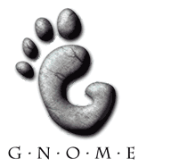

back
next

G
NOME
Accessibility:
Making Applications Accessible
Marc Mulcahy (marc.mulcahy@sun.com)
Bill Haneman (bill.haneman@sun.com)
![[GNOME logo]](foot-banner.gif)
![[Making GNOME Accessible]](foot-less-banner-wide.gif)